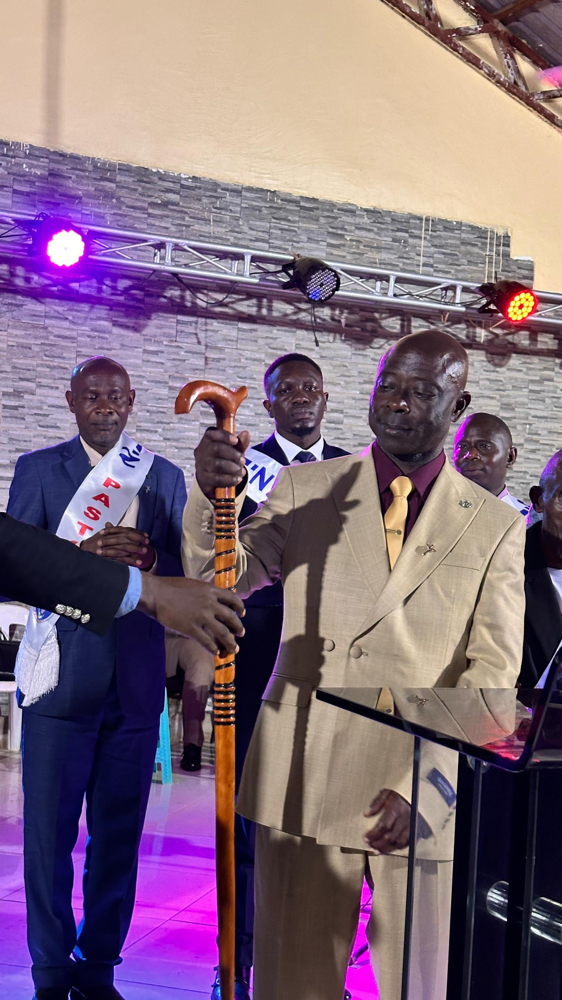
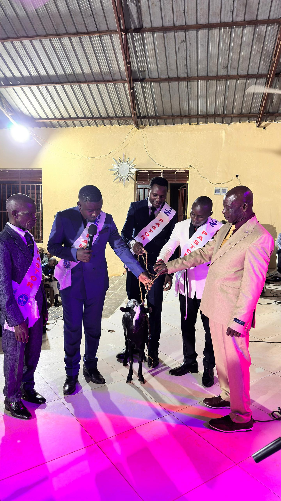
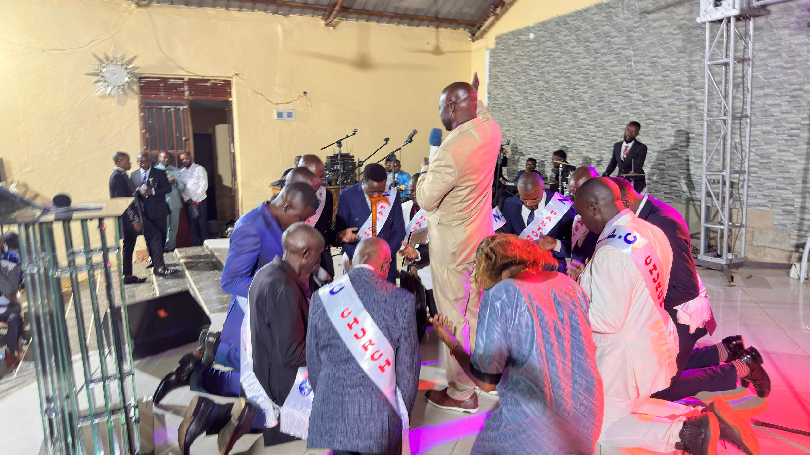
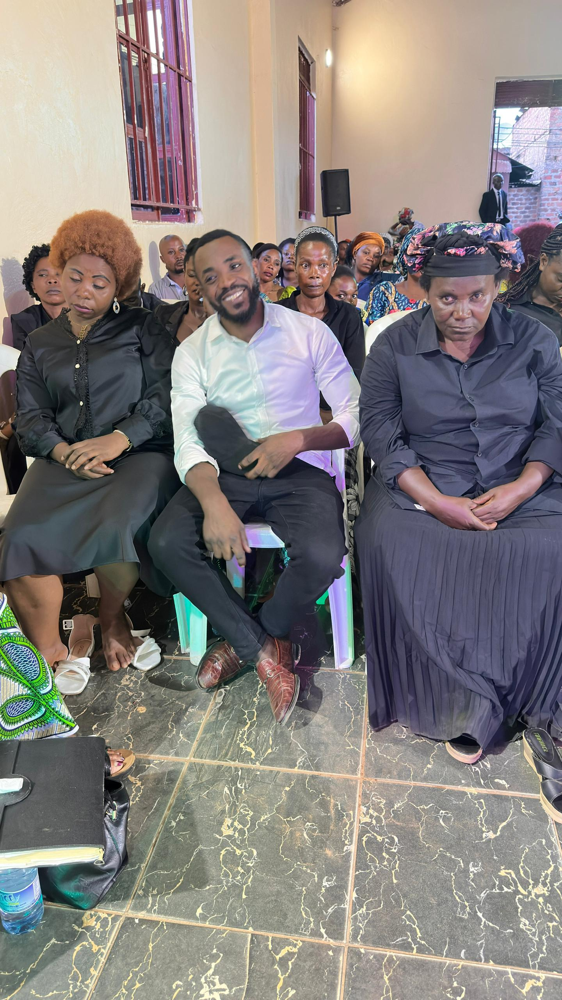
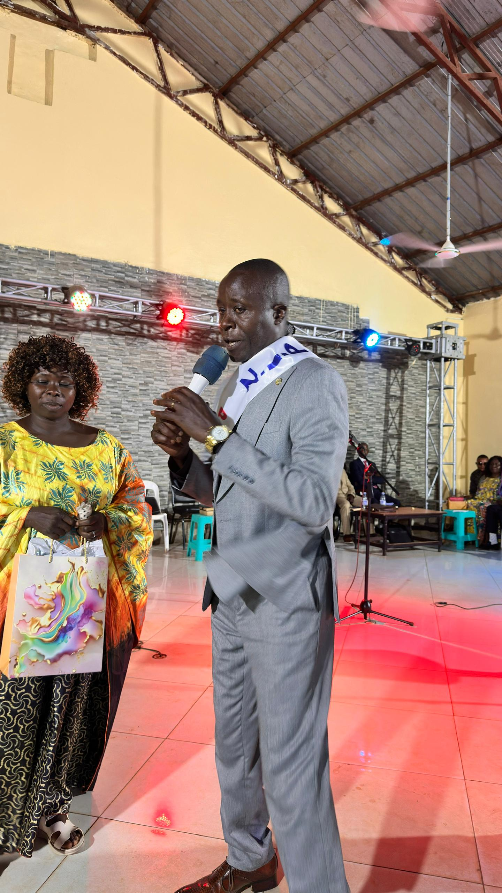
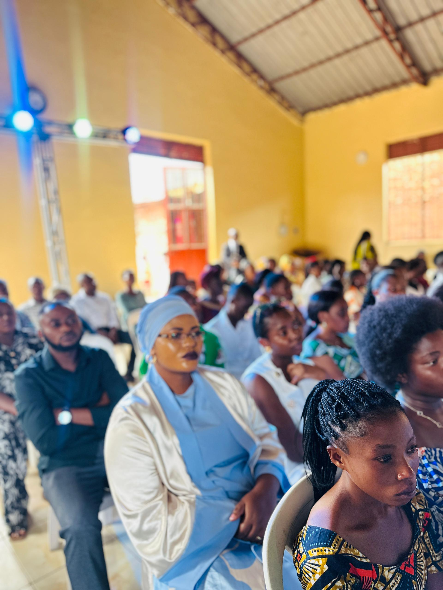
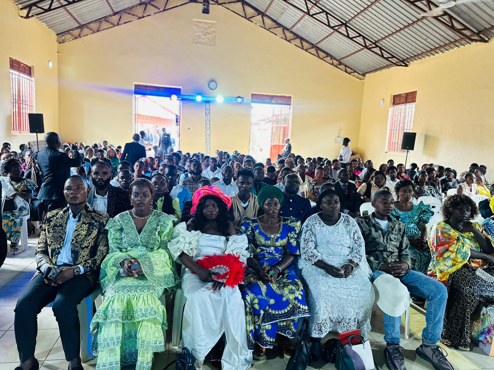
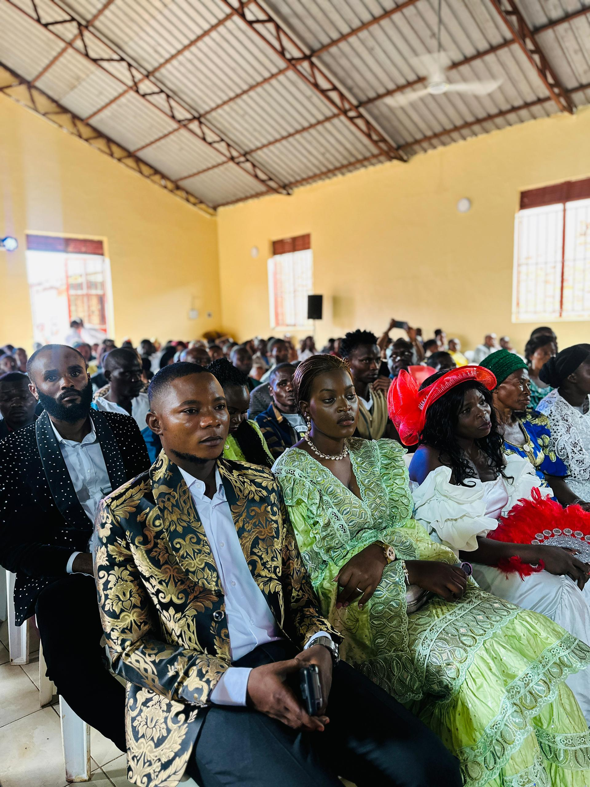
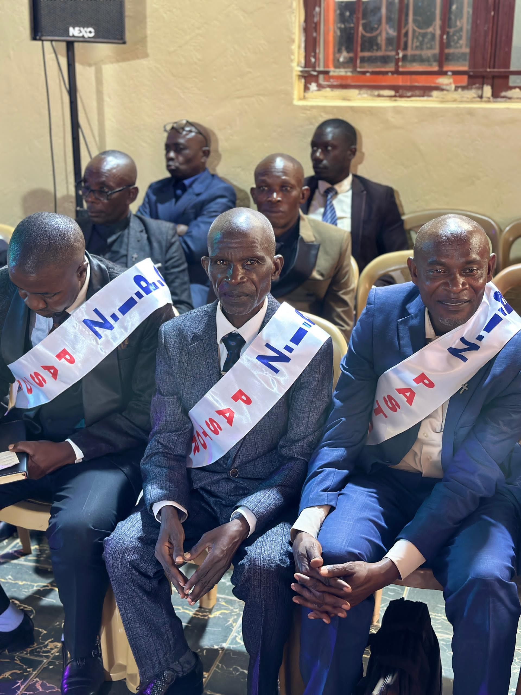
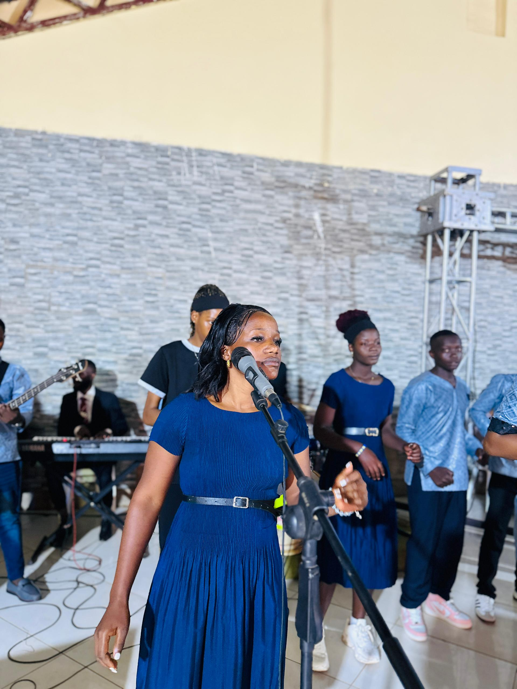

Prayer Ministry
Interceding for our church, city, and nation through consistent, passionate prayer.
Join This Ministry →Every person is called. Every gift is needed. Discover where you belong and how you can make an eternal difference.
Three of our most active ministries — and the many more you can plug into.
Interceding for our church, city, and nation through consistent, passionate prayer.
Join This Ministry →Leading the church into God's presence through music, creativity, and excellence.
Join This Ministry →Taking the Gospel beyond our walls into communities, prisons, and unreached places.
Join This Ministry →
Our prayer team stands in the gap for individuals, families, our city, and the nations. We meet weekly for corporate intercession and deploy prayer teams during services.

We lead the congregation into the manifest presence of God through music, song, dance, and creative arts. Rehearsals are held every Saturday.

We carry the Gospel beyond church walls into communities, prisons, schools, hospitals, and unreached villages. Monthly outreach missions available for all.

Raising the next generation in the ways of God through age-appropriate worship, Bible study, and creative discipleship. We believe children are not the church of tomorrow — they are the church today.

A movement of young people on fire for God. We meet every Friday evening for worship, the Word, and authentic community. Ages 13–35 welcome.
Empowering women to discover their identity, purpose, and calling in Christ. Monthly fellowship, mentorship, and community outreach initiatives.
Building men of integrity, purpose, and godly leadership — in their homes, workplaces, and communities. Quarterly retreats and monthly gatherings.

Amplifying the Gospel through video production, live streaming, photography, social media, and creative digital content. Tech-savvy volunteers needed.

Creating a warm, welcoming environment where every visitor feels seen, valued, and at home. Our ushers are the first face of Mission Church Africa.
Walking alongside people through grief, crisis, and life transitions with Spirit-led biblical counselling and community care.

Smaller gatherings throughout the week where church members grow deeper in the Word, build lasting friendships, and carry one another's burdens.

Our prayer ministry is the engine room of Mission Church Africa. Before every service, our intercessors gather to prepare the atmosphere. We believe nothing significant happens without prayer first.

From Kampala's streets to rural villages in Uganda and beyond — our outreach teams go where the need is greatest. We partner with local leaders and international networks to see communities transformed.

Community Development
Addressing poverty, education, and social justice through practical love — food distributions, school sponsorships, and widow/orphan support programmes.